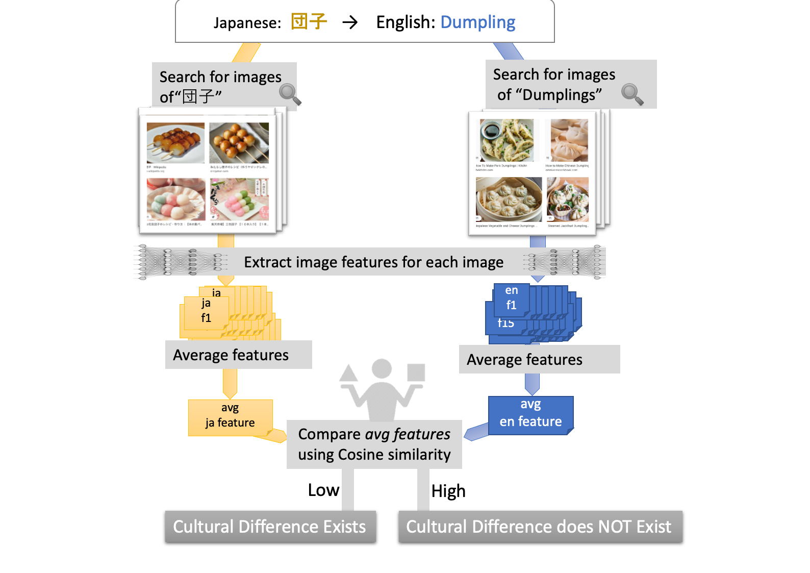
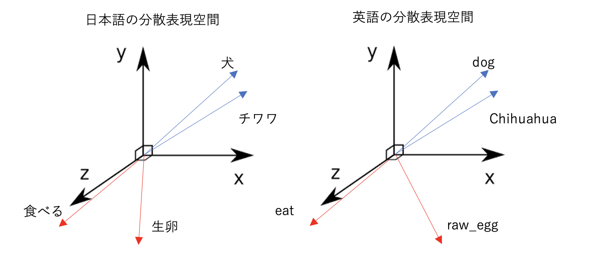
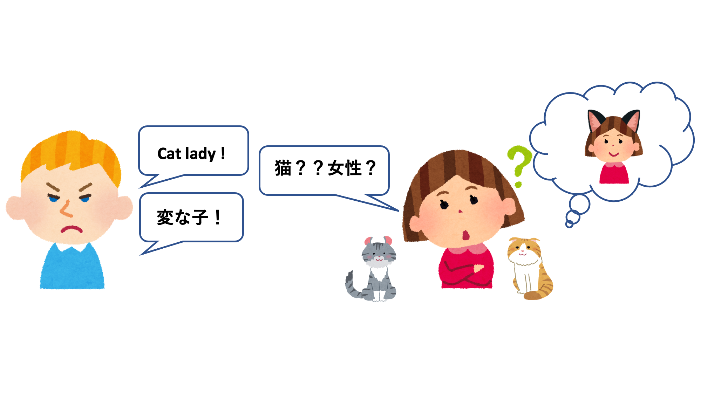
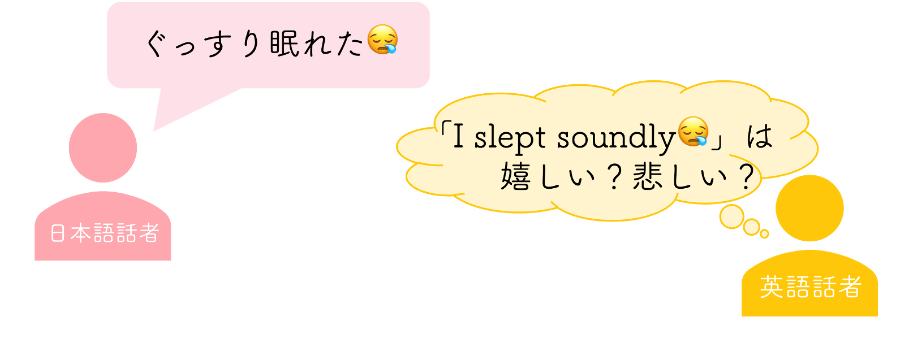
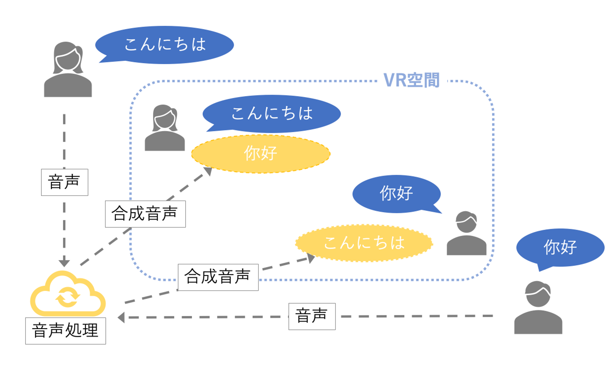
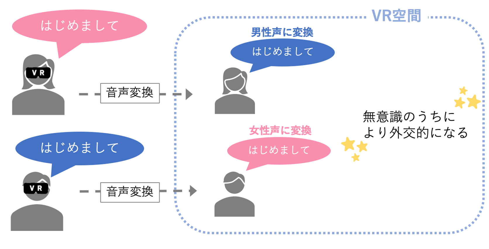

コラボレーションテクノロジー
機械翻訳組み込みツール、文化差検出、ファシリテーションエージェントなど、異文化コラボレーションを支援するツールやサービスの開発に取り組んでいます。

子どもたちの異文化コラボレーションにおけるファシリテーションの分析
SDGsの17の目標の1つに「質の高い教育をみんなに」という目標があり、その中で文化の多様性を尊重する態度が重要であると主張されています。 このような態度を子どものうちから涵養するために、機械翻訳を用いた異文化コラボレーションが行われています。 子ども達は国際的な諸問題に対する解決策の提案を目指し、多国籍のグループで議論を行います。 しかし、機械翻訳の精度には言語間でばらつきがあるため、翻訳精度の低い言語の子どもは、他の言語の子どもと比較して発言が少なくなります。 そこで、このような子どもたちが発言しやすい環境を構築するには、どのようなファシリテータの発話が有効かをグラウンデッドセオリーのアプローチを用いて分析しています。 実際に、NPO法人パンゲアが開催する「KISSY(Kyoto International Summer School for Youth)」というサマースクールでフィールド調査を行い、収集した対話ログデータで分析を行っています。 この分析で得られる知見は、今後のファシリテータエージェントの開発に活用していく予定です。
[Motozawa, Mizuki, Yohei Murakami, Mondheera Pituxcoosuvarn, Toshiyuki Takasaki, and Yumiko Mori. "Conversation Analysis for Facilitation in Children’s Intercultural Collaboration." In Interaction Design and Children, pp. 62-68. 2021.]

異文化コラボレーションのためのファシリテーターエージェント
機械翻訳を介した多言語コミュニケーションでは、機械翻訳の精度には言語間でばらつきがあるため、 翻訳精度の低い言語の話者は、他の言語の話者ほど議論に参加できず、発言が少なくなります。 本研究では、このような議論に参加することが困難な話者を検知し、その話者が参加しやすい場になるようファシリテーションを行うエージェントの開発を目指します。 話者の発言に肯定的なフィードバックを与えたり、他の話者の発話が長いときに言い換えを求めたりすることで、発言のしやすさが改善されることが分かっています。

画像特徴量に基づく文化差検出
機械翻訳の品質向上により言語の壁はなくなりつつありますが、文化の違いにより誤解が生じる可能性があります。 たとえば、日本人がよく食べる「ゴボウ」を英語に翻訳しても海外の人は日本人が思っているものと違うものをイメージします。 日本では植物の根がイメージされますが、海外では棘をもった植物がイメージされます。 これらはどちらもゴボウのイメージですが、日本では根を食べる文化がある一方で、海外ではそのような文化がないためこのような差が生じます。 このような文化差を検出するために、深層学習を使って画像から得られる特徴ベクトルを抽出し、その類似性に基づいて文化差を検出する手法を提案しています。
[Nishimura, Ikkyu, Yohei Murakami, and Mondheera Pituxcoosuvarn. "Image-based detection criteria for cultural differences in translation." In International Conference on Collaboration Technologies and Social Computing, pp. 81-95. Springer, Cham, 2020.]

異言語間の分散表現を用いた文化差検出/未知語対訳作成
多言語コミュニケーションにおいて、翻訳は合っていても、文化差によって会話の齟齬が生まれてしまう場合があります。 たとえば、「卵」の食べ方があります。日本では卵を生で食べる食文化がありますが、生で食べる文化のない国も存在します。 このような文化差を検出し、ユーザに知らせることを目的に研究しています。 具体的な手法としては、言語ごとに書かれている大量のテキストの内容の違いから文化差を検出します。 研究テーマにある分散表現とは、テキストの単語の出現位置から単語のベクトルを一意に作成する技術のことです。 このベクトルを異言語間で比較し、ベクトルが大きく異なるならば、文化差ありと判定します。 また、文化差によってそもそも翻訳先言語に対訳が存在しない文化固有の単語（未知語）も存在します。 この未知語のベクトルに近い翻訳先言語の単語を組み合わせることで対訳を生成する技術も研究しています。

マスク言語モデルに基づく物体の印象の文化差検出
ある物体に対する印象の文化差がコミュニケーションの齟齬を生んでしまう場合があります。 たとえば、英語では「Cat lady」という言葉があり、猫好きの変わった人を指す場合に用いられます。 一方で、日本語では猫にそのようなネガティブな印象はないため、かわいい人と理解される可能性があります。 このような物体の印象の文化差を検出するために、マスク言語モデルを用いて、 コーパス上のその物体を表す単語の使われ方の違いから文化差を検出する手法を提案しています。

感情予測を用いた絵文字の文化差検出
絵文字は感情やイメージを視覚的に付与することができるため、チャットコミュニケーションの中で、読み手と書き手の意思疎通の手助けをする効果があります。 そんな絵文字は異文化間でのチャットコミュニケーションの中で意思疎通の手助けをする強力なツールとなりそうですが、文化圏によって同じ絵文字でも解釈が異なることがあります。 例えば上の図のように、絵文字「😪」が日本語圏では「鼻提灯を垂らしながら眠っている絵文字」、英語圏では「泣き顔」だと解釈されることがあります。英語圏では水色の鼻提灯の部分が涙として捉えられることがあるようです。そのため書き手が込めたテキストと絵文字の関連性が絵文字の解釈によって失われ、コミュニケーション齟齬が起きる可能性があります。 このような問題を解決するために絵文字解釈の文化差の検出に取り組みます。
発表情報: 森叶葉, 張禹王, 村上陽平. 感情予測モデルに基づく絵文字埋め込み, 情報処理通信学会総合大会, 2024

メタバース上での多言語音声コミュニケーション支援
身体の見た目や動かし方が、その人の考え方や行動に影響を与えることはよく知られています。 メタバースでは、自分の身体は「アバター」として表現されますが、アバターの外見を変えることで、その見た目に合わせた行動の変化が見られることがあります。 このような現象は「プロテウス効果」と呼ばれています。たとえば、背の高いアバターを使うと、交渉タスクにおいてより強気な態度をとる傾向があることが報告されています。 本研究では、メタバース上において発話内容を他言語に翻訳し、合成音声に変換して相手に伝える多言語音声コミュニケーション環境を構築し、言語的変化が交渉行動に与える影響を検証します。 本研究で得られる知見は、今後、メタバースにおけるユーザーの体験設計や、異文化コミュニケーションにおける音声インターフェースの設計に活用されることが期待されます。
発表情報: 岩野智総, 村上陽平. メタバースにおける発話言語の変換による話者の振る舞いの影響, 情報処理通信学会総合大会, 2025

メタバース上でアバターの発話音声が与えるユーザの行動への影響分析
従来のプロテウス効果に関する研究は、主にアバターの視覚的な属性に注目してきましたが、音声や声の性別といった非視覚的な特徴によってユーザーの行動が変化する可能性については、十分に検証されていません。 前述の研究がメタバースにおける音声変換を通じたコミュニケーション支援に焦点を当てていたのに対し、本研究では、アバターの発話音声がユーザー自身の行動に与える心理的影響に着目し、 VR環境上で被験者が自身と異なる性別の音声を用いたときに、自己開示や交渉行動にどのような変化が生じるのかを検証します。 本研究は、メタバース環境における音声的自己表現がユーザーの振る舞いに与える影響を明らかにし、今後のバーチャル空間におけるインタラクションデザインや、自己表現支援技術の発展に貢献することを目指しています。
発表情報: 森由璃亜, 村上陽平. ボイスチェンジャーによる話者の振る舞いへの影響, 情報処理通信学会総合大会, 2025